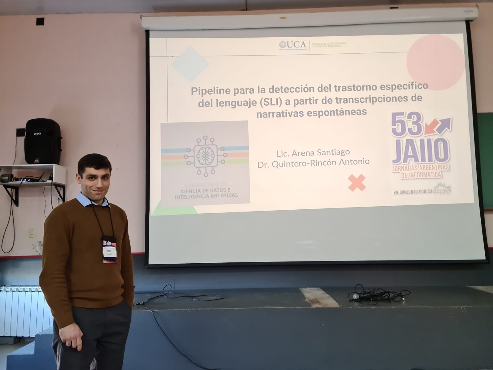
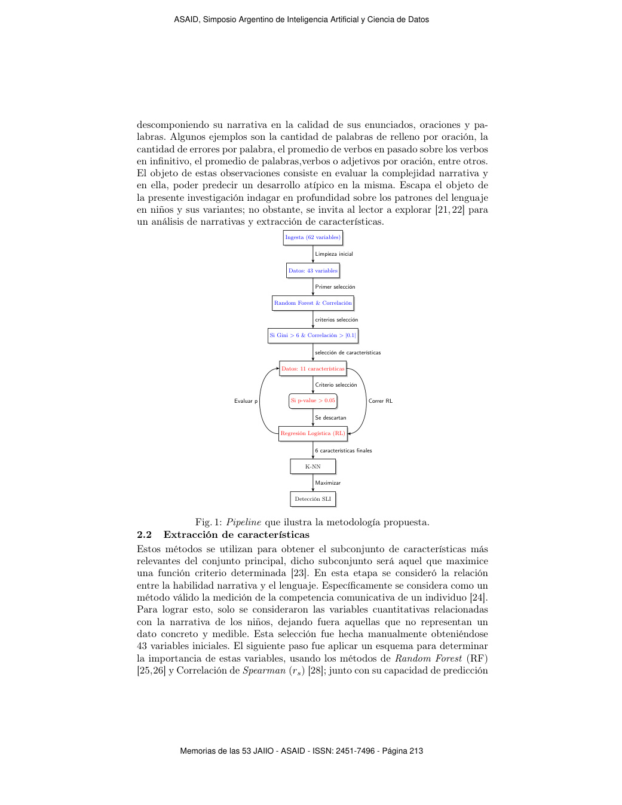
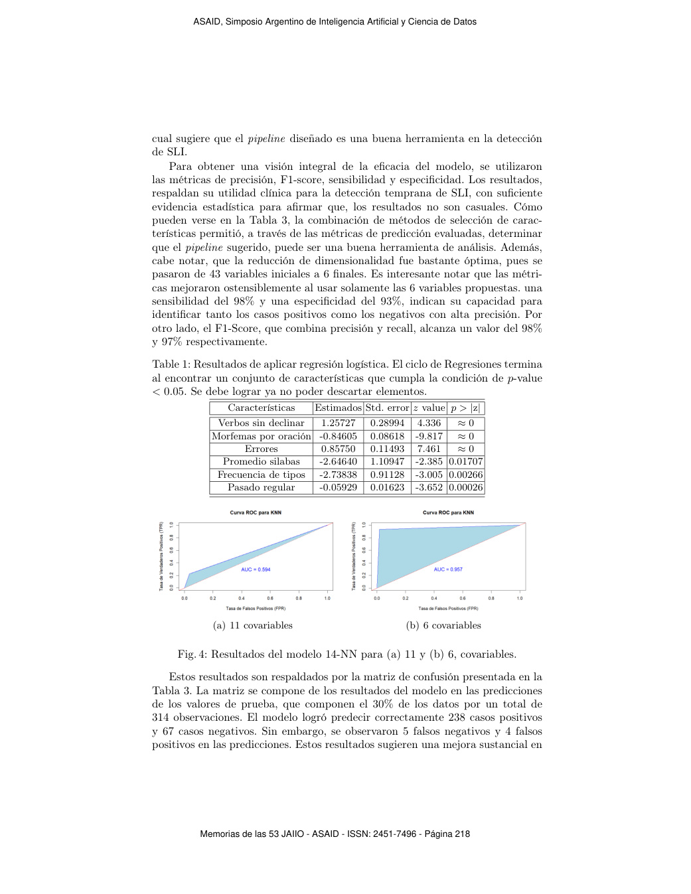
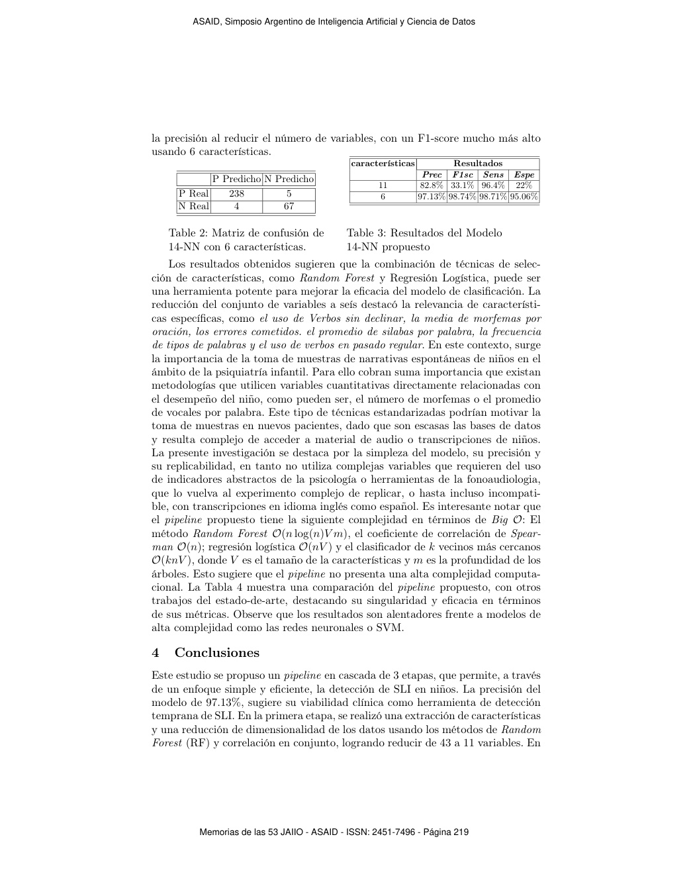
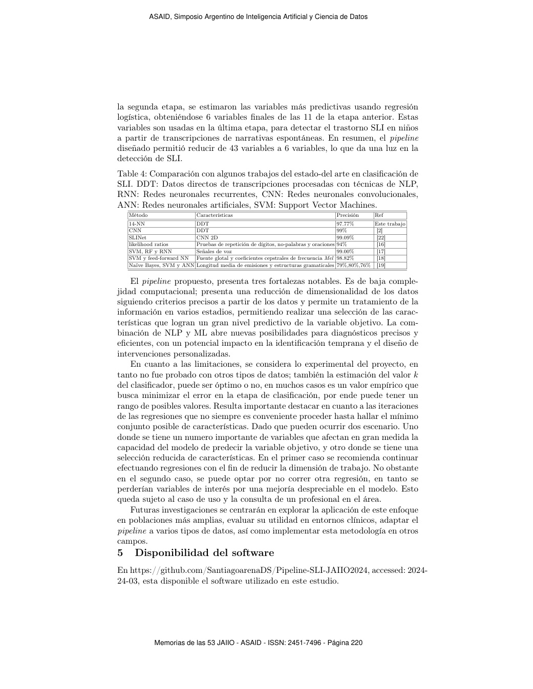
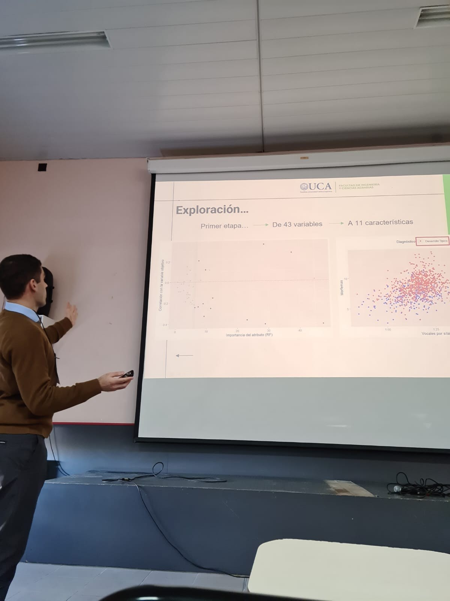

JAIIO/ASAID 2024 · paper publicado · NLP · machine learning
Pipeline SLI: paper publicado sobre detección del trastorno específico del lenguaje
Paper de Santiago Arena y Antonio Quintero-Rincón publicado en JAIIO, Vol. 10 Núm. 1 (2024),
dentro del Simposio Argentino de Inteligencia Artificial y Ciencia de Datos. El trabajo propone
un pipeline de tres etapas para detectar Trastorno Específico del Lenguaje (SLI) en niños a partir
de 1063 transcripciones de narrativas espontáneas.
1063entrevistas analizadas
62 → 6variables desde ingesta a modelo final
97.13%precisión reportada
98.71%sensibilidad con 6 características

Problema
El SLI afecta la comunicación y puede comprometer comprensión y expresión. El proyecto busca
detectar señales de SLI usando variables cuantitativas extraídas de narrativas espontáneas, evitando
depender de indicadores subjetivos difíciles de replicar. El objetivo es distinguir desarrollo típico
y SLI con un pipeline interpretable y reproducible.
Pipeline de tres etapas
Ingesta y limpieza: de 62 variables iniciales a 43 variables cuantitativas relacionadas con narrativas.
Reducción de dimensionalidad: Random Forest e importancia Gini combinadas con correlación Spearman.
Selección explicativa: regresión logística iterativa hasta conservar 6 variables con `p-value < 0.05`.
Clasificación: modelo 14-NN entrenado con partición 70/30 y validación cruzada.
La versión final del pipeline redujo el problema a 6 características y obtuvo 97.13% de precisión,
98.74% de F1-score, 98.71% de sensibilidad y 95.06% de especificidad. La matriz de confusión
del modelo 14-NN con 6 características reportó 238 positivos reales bien clasificados, 67 negativos
reales bien clasificados, 5 falsos negativos y 4 falsos positivos.
Las variables finales fueron: verbos sin declinar, morfemas por oración, errores de palabra,
promedio de sílabas por palabra, frecuencia de tipos de palabras y uso regular del pasado.
Publicación y presentación
El artículo fue publicado el 19 de septiembre de 2024 en JAIIO, Jornadas Argentinas de Informática,
en la sección ASAID. En agosto de 2024 participé de la instancia JAIIO junto a Ricardo Di Pasquale,
director de la carrera de Ciencia de Datos de la UCA y referente de machine learning en Accenture.
Figuras del paper

Pipeline en cascada: limpieza, RF + Spearman, regresión logística y k-NN.

Resultados de selección por regresión logística y comparación con 11 vs 6 covariables.

Matriz de confusión y métricas finales del modelo 14-NN propuesto.

Discusión de fortalezas, limitaciones y comparación con trabajos del estado del arte.
Registro visual
Portada de la presentación: pipeline para detección de SLI desde transcripciones espontáneas.

Presentación del análisis exploratorio y reducción de variables.
Ricardo Di Pasquale es director de la carrera de Ciencia de Datos de la UCA y referente profesional
en machine learning. En Accenture se desempeña como ML Engineering Associate Director, con foco en
ingeniería de modelos, MLOps y aplicación de aprendizaje automático en entornos reales. Su presencia
en JAIIO aportó acompañamiento académico y puente con la práctica profesional de ML.